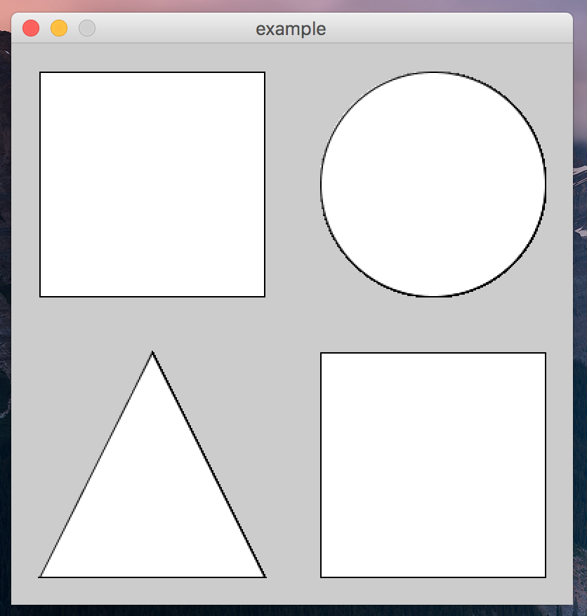
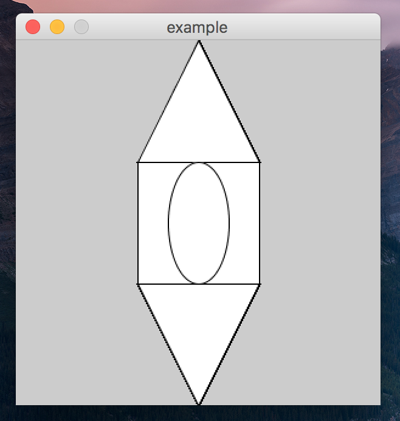
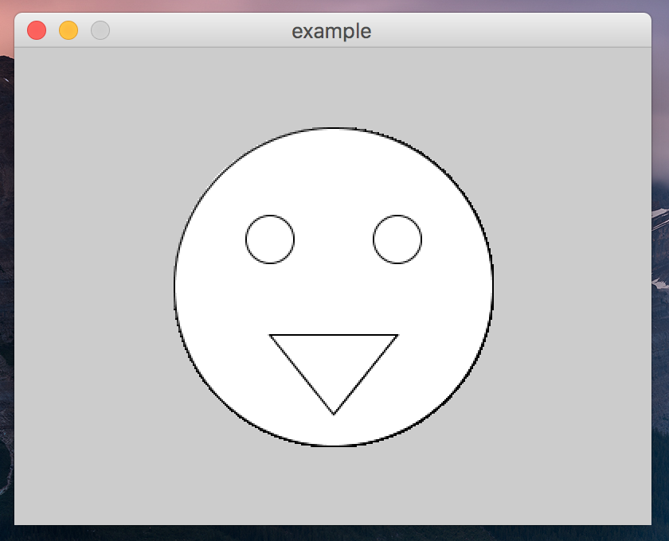

This assignment should be written in the processing programming language. You should only use processing features that we have discussed up to this point. If you have questions about whether or not a particular feature can/should be used, ask the instructors! You may use any processing version 3.0 or newer.
In this assignment, you’ll be writing a few small and simple processing programs, that display basic images and shapes.
Write a processing program that displays a canvas that looks like the following.

A few guidelines:
Name this processing program four_corners.pde.
Write a processing program that displays a canvas that looks like the following.

A few guidelines:
Name this processing program points.pde.
Write a processing program that displays a canvas that looks like the following.

A few guidelines:
Name this processing program face.pde.
Write a processing program that displays a canvas that looks like the following.
A few guidelines:
Name this processing program tree.pde.
This was assigned on 8/25/2017. It is due on 9/1/2017 at 5:00pm.
Turn in each of the files described in the spec (4 total) to the assignment 2 dropbox in D2L before the due date. Make sure to name the files exactly as this document specifies. In general, make sure to follow these instructions precisely. If you don’t, we will deduct points!!!
Remember, you should turn in your actual code file, not a screenshot of the result! If you don’t know how to do this, ask Ben or one of the section leaders.